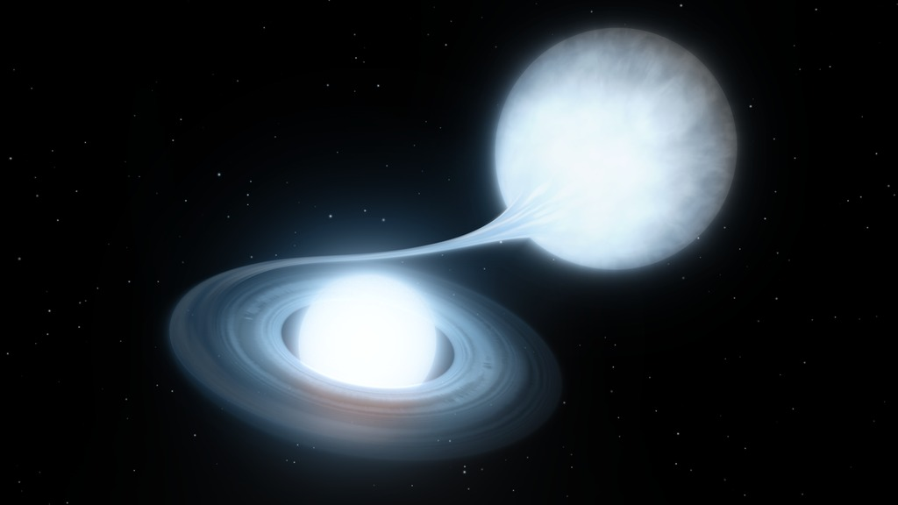
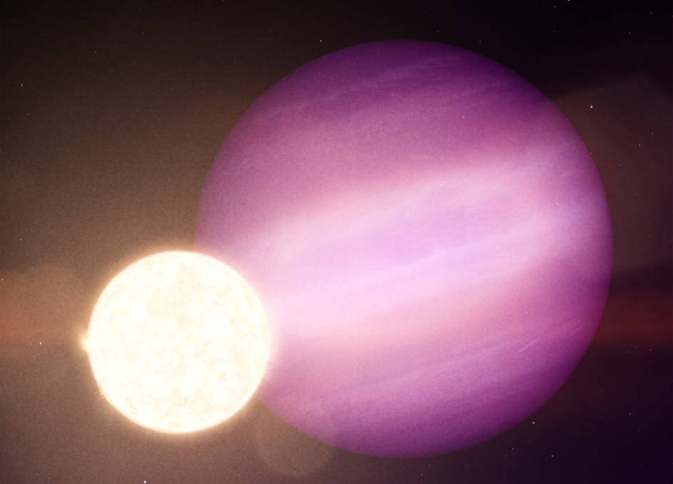
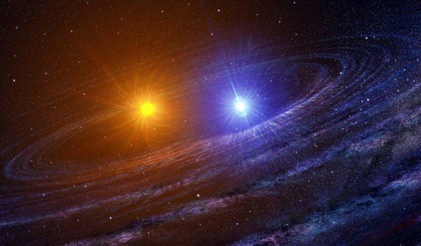
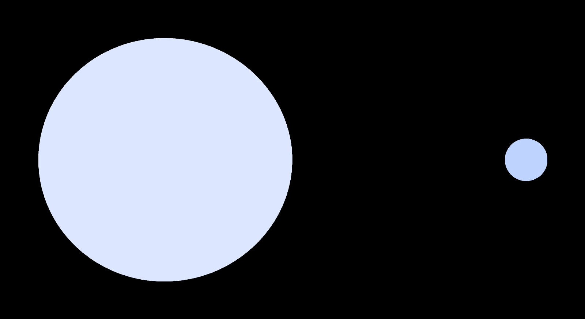

Research
White dwarf binaries, LISA sources, and time-domain astronomy
I am an observational astronomer focusing on white dwarf binary stars, specifically systems that emit gravitational waves detectable by the LISA gravitational wave satellite. I am an expert in time-domain astronomy and the use of optical time-domain survey telescopes, including the Zwicky Transient Facility and Rubin/LSST.
I have published 11 first author papers and two as senior author with my students. A full list of my 98 refereed publications can be found on ADS.
White Dwarfs
Ultracompact Binaries & LISA Sources
Ultra-compact binaries consist of at least one white dwarf and have orbital periods of 5-65 minutes. Their orbital period evolution is governed by angular momentum loss due to gravitational wave radiation and they are the most common type of detectable LISA binary.
There are detached systems (double white dwarfs) and mass-transferring systems (AM CVn binaries). The questions we aim to answer are: how are these systems formed; how do gravitational waves guide their evolution; and how does accretion change this?
Using ZTF, and now also BlackGEM, I have been systematically searching for eclipsing systems. Because they are eclipsing, the binary properties can be precisely measured, which can be used to infer the formation channel.
Key publications: van Roestel et al. (2021a, 2022); Khalil et al. (2024); van Roestel et al. (2025)

White Dwarfs with Dark Companions
Short period white dwarf binaries are born from close main-sequence binaries that go through a common-envelope phase. Since white dwarfs are typically many times smaller but a lot hotter than their companion eclipses are deep and easy to identify with photometric surveys.
With ZTF, I have collected a sample of over 1400 such systems. Most are regular white dwarf-dM systems, but there are interesting subsets: 1) the 'hidden' population of period-bounce cataclysmic variables, 2) eclipsing magnetic white dwarf binaries, and 3) long period white dwarfs with brown dwarf/giant planet companions.
Key publication: van Roestel et al. (2021b), Full sample paper in prep.


Cataclysmic Variables
Cataclysmic variables are Roche lobe accreting white dwarfs with low-mass companions. The evolution of these objects is governed by gravitational waves, and they can be used as laboratories to understand accretion physics.
The Zwicky Transient Facility is observing thousands of CVs which stand out due to their often strong variability. To understand the population better, I have made a catalogue of all outbursting cataclysmic variables detected in ZTF (5000+). In addition, by searching the ZTF data, I more than doubled the number of highly magnetic, dormant cataclysmic variables.
Key publication: van Roestel et al. (2024), Dwarf novae sample paper in prep.

Other projects
ZTF Source Classification Project (SCoPe)
The Zwicky Transient Facility is producing vast amounts of data and has collected lightcurves for 2 billion objects. The first step in doing science with this data is to identify and classify the many different types of variables.
With PTF, I explored the potential of machine learning classifiers for variable star lightcurves. With ZTF, I led the effort to identify and classify all persistent objects. This is a huge multi-class, multi-level classification problem with different requirements on purity and completeness.
We developed an alternative approach: instead of using one machine learning classifier, we use multiple separate classifiers which classify binaries at different levels completely independently. This allows for much greater flexibility and insight.
Key publications: van Roestel et al. (2021c); Coughlin et al. (2021). See the SCoPe project webpage.
Eclipsing Quadruple Stars
Most stars can be found in multistar systems and are gravitationally bound to other stars. Quadruple stars are systems that consist of four stars, and the stars in these systems can heavily affect the evolution of some or all components.
Working with BSc student T. Vaessen, we developed a method for finding double eclipsing binary quadruples that consist of two eclipsing binaries orbiting each other. We applied the method to ZTF lightcurves and increased the known sample size by more than 50%.
Key publication: Vaessen and Van Roestel (2024)

Sky2Night: Fast Transient Search
The Sky2Night projects were three-week-long campaigns where we used the PTF telescope to systematically observe 400 deg² at a 2-hour cadence. Simultaneously, we used the WHT, INT, P60, and Hale telescopes to observe all new transients discovered in this field, obtaining an unbiased sample of transients.
With the data, I determined a robust observed rate for extra-Galactic and Galactic transients. In addition, we calculated an upper-limit to the rate of fast optical transients. This work is in preparation for the systematic search for kilonovae (the optical counterparts to NS-NS mergers detected by LIGO/Virgo).
Key publication: van Roestel et al. (2019a)